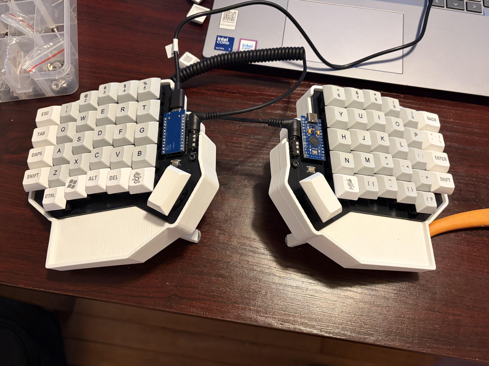
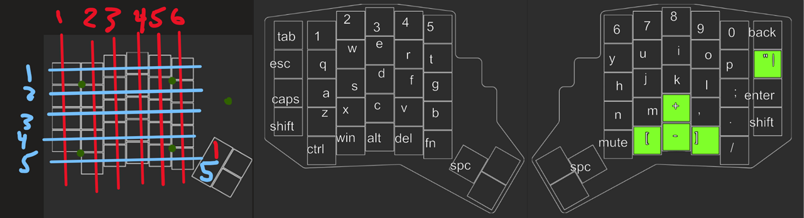
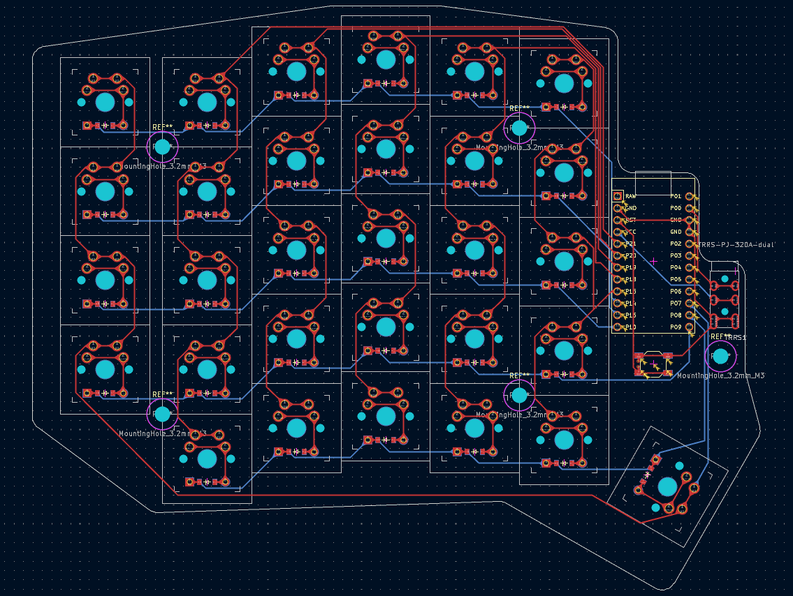
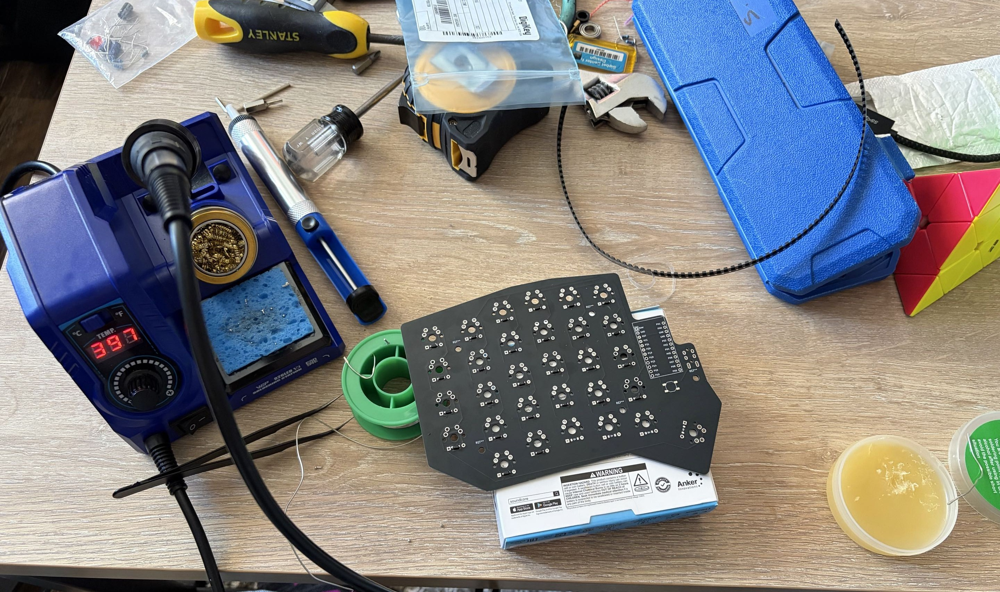
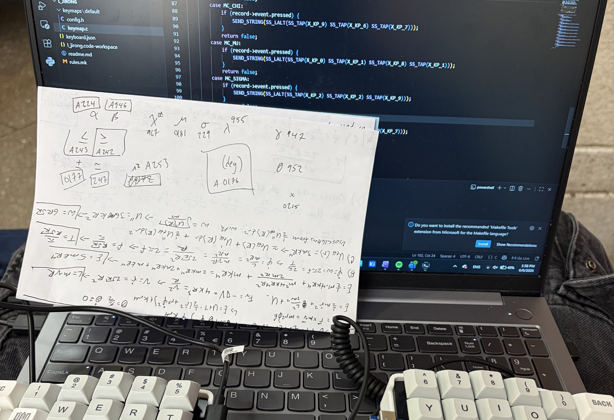
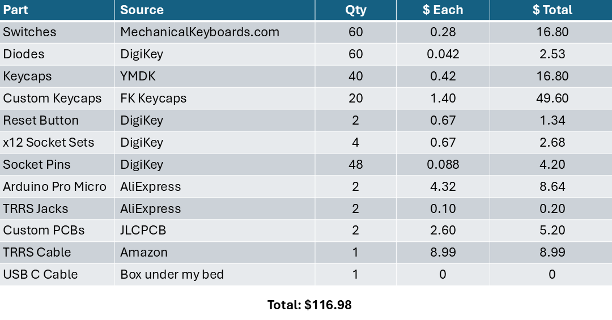

This project was a gift to my mother, who's a Professor and spends most of her day at her desk, after she expressed her discomfort and unsatisfaction with her office setup ergonomics (exact words), so I tried to fix it. Ergonomic mice are relatively cheap with common designs. Keyboards had too much variety based on personal comfort and were also too expensive for my liking. As every engineer/tinkerer/middle-aged father has said, 'I can build that better, and cheaper.' (scroll down for full BOM).
Though this also gave me many more constraints than my usual projects. Lots of keyboard design choices are subjective to the user, and this was a surprise gift. I tried to make layouts and functions as intuitive as possible and keep things simple.

Layout was mostly my personal preference, with as little deviation from the standard QWERTY as possible for simplicity and ease of use. I've personally only ever used 100% keyboards (for reasons I can't explain), but I cut down here. I looked online a lot for inspiration and settled for a 64 key (3 key thumb cluster) layout, but decided it looked too clunky and ended up with the final 60 key layout. I ended up spending a good while looking for nice keycaps and getting some custom ones made for aesthetics. Blanks probably would've been the cheapest, or all 1U size keys, but that wouldn't be nearly as easy to use.

The PCB I designed to be reversible and usable for both sides, primarily to save money and because why not. I used an Arduino Pro Micro on each side and went with Cherry Red Silent switches. I decided against hot-swappable switches, but did socket my microcontrollers because I was scared I'd fry something. The two halves are connected via TRRS for serial communication.
Apparently keyboard enthusiasts are more common than I thought, and ergogen.xyz was developed to make the process MUCH easier. I basically drew out the layout and PCB using YAML, so my KiCad skill might be a lie (all I did was route the connections and line up mounting holes). Still, it was great fun to make sure all my connections could be formed in just two layers, and definitely helped me learn my way around the KiCad interface.

This project was also totally just an excuse to buy a soldering kit, though I should've definitely picked one with a fan. [30 switches, 30 diodes, 24 pins/sockets + Arduino] x 2 was definitely some good soldering practice.

I also tried adding shortcuts that might be useful, like emails and passwords, as well as special characters like greek letters that commonly appear in genomics research/writing (at least from my outsider perspective). Again, keyboard enthusiasts have created the great tool QMK that made writing and flashing firmware very easy, so no C code had to be manually written (thankfully). I used windows Alt codes * I am windows Alt code # 1 fan I loved my L_alt 0151 before chat gpt, and greek letter alt codes were my top search when writing reports in Word. so no Unicode or external software needs to be installed to get the extra characters.

Ergogen could've also helped create an stl for a case, but I preferred making my own in Inventor. This was pretty straightforward, though it did take a few tries to get a nice print in place tenting. Also added some TPU pieces for wrist rests but after this picture was taken. See top picture.

I spent about ~$150 total including extra/wrong parts and shipping/tariffs, which really isn't that bad. Looking just at the used parts, though, its pretty comparable to market options for ergonomic split keyboards. I probably could've found cheaper keycaps or even printed my own, but that's not right to give to your mother. I still think its worth the cost because I like the layout and customizability, but I guess we need user feedback to decide if its better (hello mother).
Since JLCPCB ships in packs of 5, and I already have extra diodes/microcontrollers (bought 1.5x the needed amount in case I blew something up), I might just rip some switches off one of my old keyboards and make myself a macropad. My dad also had an odd fascination with the keyboard, so I'm gonna try to add a trackpad or some pointer control and make a second one too- with the same pcbs if possible.
Overall 10/10 project. Learned a lot, had a blast, mother is happy!